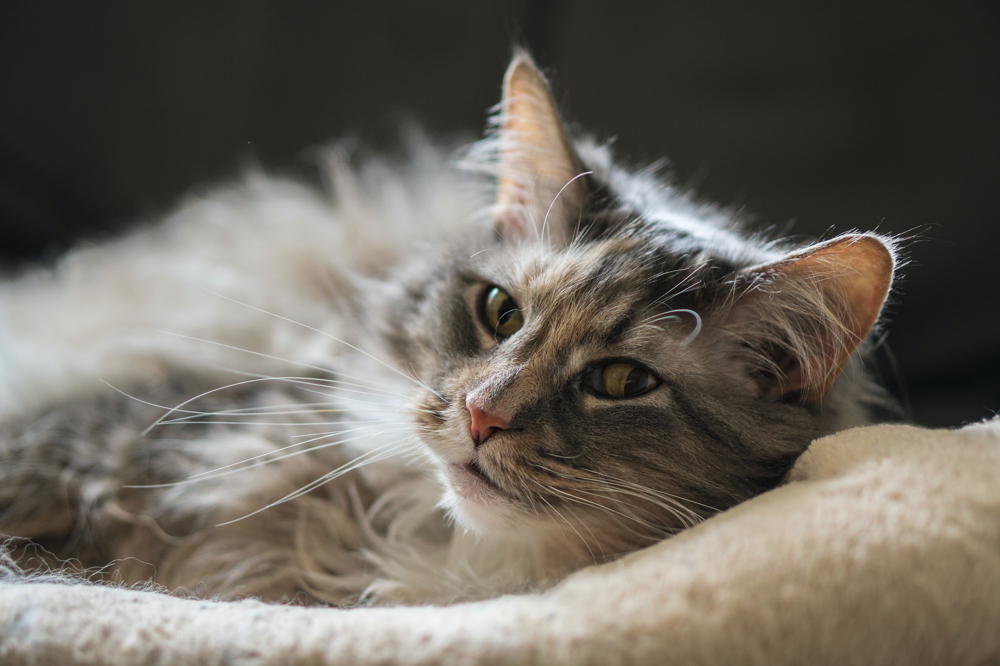
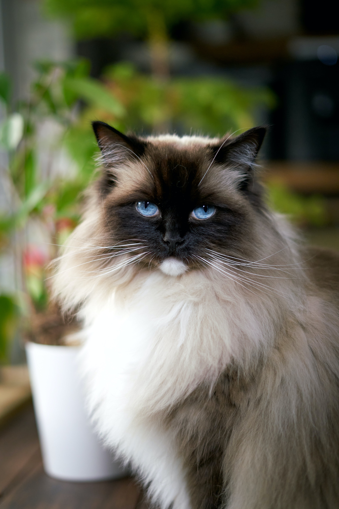
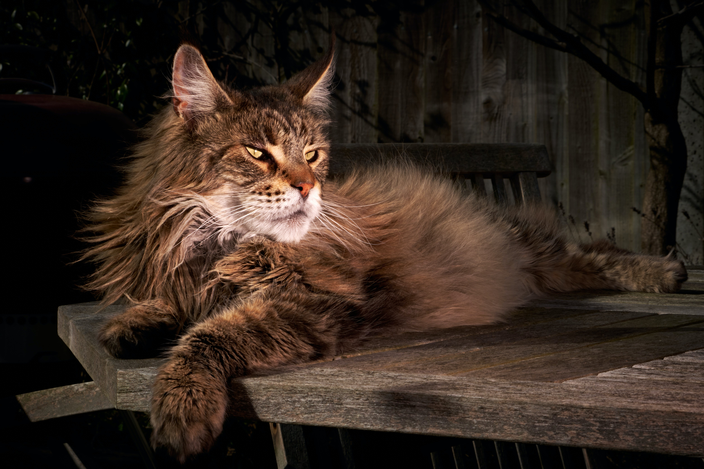
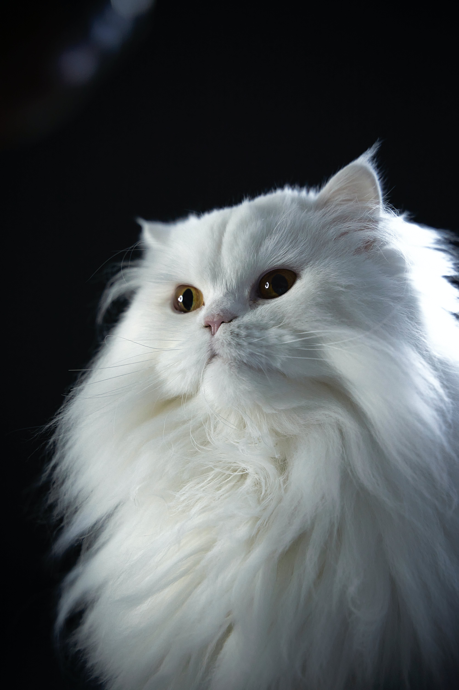
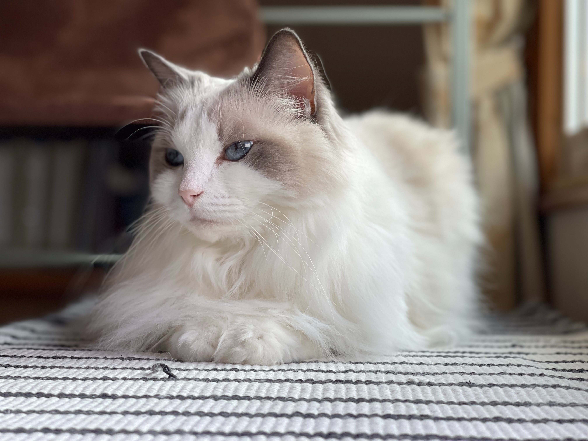

Most calmest cats
This cats breeds are recognized for being the most calmest.

Popular calmest breeds

Himalayans love to relax and cuddle and live harmoniously with most people and pets

Don’t let the Maine coon cat’s size fool you—these gentle giants with the long, flowing coats are very relaxed and mellow

The Persian is the most popular purebred cat breed in the United States, and their calm, affectionate, and gentle personality likely has a lot to do with that position

In fact, the breed earned its name thanks to these cats’ endearing tendency of melting limply into your arms while you hold them
"A cat purring on your lap is more healing than any drug in the world, as the vibrations you are receiving are of pure love and contentment."
~ St.Francis of AssisiCall to action! It's time!
Sign up for the lastest information right now!